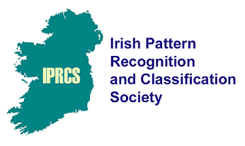

Irish Pattern Recognition and Classification Society
Twitter
LinkedIn
Facebook
Related events
Irish Signals and Systems Conference (ISSC)
Conference On Applied Statistics In Ireland (CASI)
ASA Statistical Learning and Data Science
Related societies
International Association for Pattern Recognition (IAPR)
International Federation of Classification Societies
British Classification Society
British Machine Vision Association

Menu
Welcome
IPRCS history
IMVIP conferences
Upcoming IMVIP conference
IPRCS Support
Call for Organizers
Call for Sponsors
IMVIP proceedings
Related events & societies
Get in touch
@iprcs
LinkedIn
IPRCS president
Ireland (ROI & Northern Ireland)